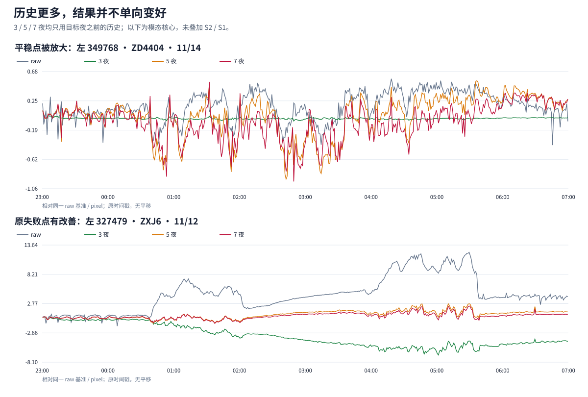

历史适用性：先防错误扣除，再考虑更多历史
离线分析 · 2026-11-17 · 所有结果留在 V54-Astra / round11_current_applicability
本轮结论
暂保留最近3个合格夜；增加至5/7夜不能替代当日适用性判断。 本轮试验的“J活动小就缩小总补偿”未通过，已否决，未接入交付源码或状态包。
当前历史保存跨测点关系，并不按时间重播历史波形。真正风险是今天的其他点变化、有效点集合或参考状态，被旧关系错误投影到目标点。
更多历史：同一组12设备、6夜对照
11/10–15，23–07；3130个合格点夜。三种长度均重新生成模态及gain，只用此前历史。以下仅是模态核心，不能与完整链通过数直接相加。
| 历史长度 | 范围≤1 pixel | 范围P95 / pixel |
|---|
| 3夜 | 1924 / 3130 | 2.357 |
| 5夜 | 1921 / 3130 | 2.407 |
| 7夜 | 1922 / 3130 | 2.372 |
左349768 / ZD4404 / 11-14：raw范围0.985，3夜0.152，5夜1.460，7夜1.479。原327479 / ZXJ6失败点随更多历史改善，但其他点存在退步。

完整中文报告与统计口径
平稳夜与保护试验
完整10夜普通/J有效4851点夜，其中raw范围≤1的121点夜，现有完整链没有范围放大。没有覆盖“前三夜均强、第四夜整台静止”的真实案例，不能据此宣称该情景已验证。
否决候选：只用J活动强弱缩放既有总补偿。普通/J按普通≤2、J≤1范围统计，从4532降到4010 / 4851；新增522个范围失败。XJ另列描述，不当静止基准，也不据绝对范围直接判业务失败。
原因可直接解释：输出 = raw − gain × 补偿；即使raw不动，gain改变也会造成 −补偿 × gain变化 的额外坐标变化。渐变只把跳变换成斜坡。实测327479 / ZXJ6 / 11-08最大相邻变化0.577→6.603 pixel。
固定平稳样本 · 保护候选否决报告 · 构造测试与反例
真实历史后的已知真值测试
冻结327479真实11/09–11三夜模型，第四夜22–07所有54点均恒定：模态预测补偿、输出误差、新生范围均为0。历史本身不会播放旧波形。保留前一段W3缓存的独立边界测试出现约0.002854 pixel变化，不能与理想恒定用例混淆。
再只给普通点真实+1 pixel阶跃、J及其他点保持不动：ZD4703保留0.89954；按历史最大自投影选出的ZD3204保留0.63956，同时静止ZXJ6出现最高0.92847 pixel假响应。这直接暴露目标变化被跨点旧关系传播的问题。仅Python模态核心，未经过原生全链；该对抗点不是全设备发生率估计。
合成构造、真值及完整结果
下一版应实现的逻辑契约
- 历史只提供候选空间关系。当夜扰动幅度由当夜观测估计，不继承过去“大波动就强补”的力度。
- 用独立J检查历史预测的当前残差、方向、参考之间一致性及可观测性。普通点与XJ的自身拟合不能单独授权扣除它们的变化。
- 只允许参考有证据支持的补偿增量。关系失配时停止增加不可信补偿，保留已接受值并显示失配状态；不能突然把全部补偿归零。冻结可能保留旧偏置，必须可见。
- J不足或某模态在J上不可辨时明确“无充分证据”。当前12台中5台无J，不能声称此方案覆盖它们；也不把XJ假定不动补位。
- 3夜维持当前默认；可另保留7夜用于历史稳定性诊断和后续独立验证，不自动混入、不按本夜结果挑最佳模型。历史更替、重启与07切原始数据均需单列测试。
这是待实现并验证的方向，尚未证明可以解决327479的关系失配。参考驱动的模型估计、后级S2/S1、保护切换和状态恢复需要一起验证；不新增运维逐点旋钮。
验证边界
历史长度重建的72个设备夜与冻结原生3夜模态核对，最大差5.11×10⁻¹⁰ pixel。J活动候选只叠加于冻结原生输出，不能替代完整链事件注入。新DLL未执行；未改数据库、已导出CSV或交付cpp/h/状态包。
合成真实阶跃、扰动与位移相消、参考故障、保护切换均必须独立验收。范围更小或能量更低不是物理准确性证明。详细设计与否决条件